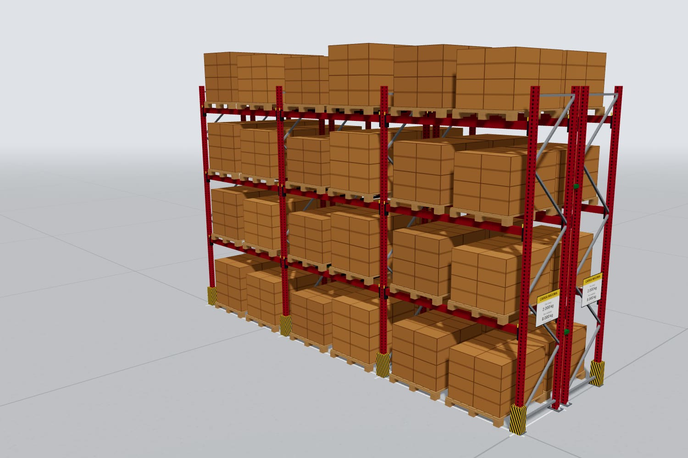
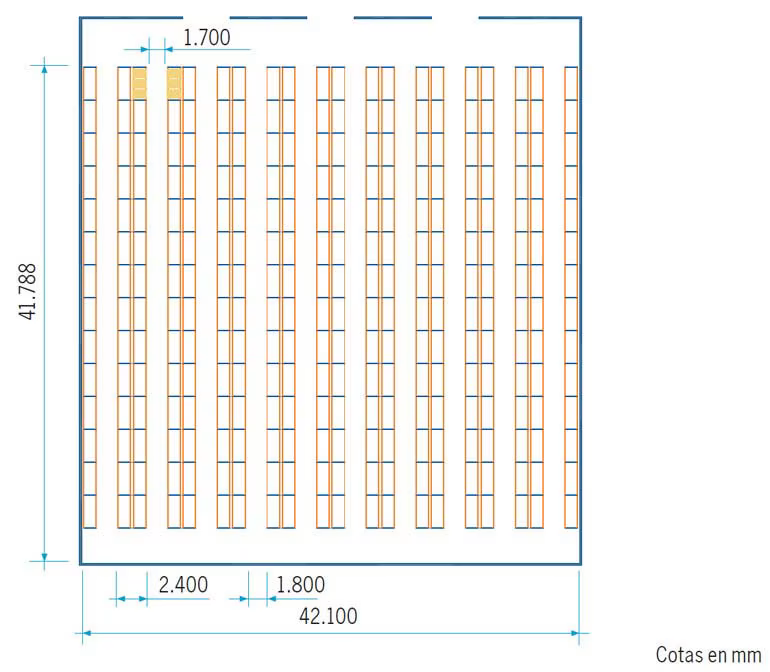

Como AutoCAD, pero sencillo: dibujar el depósito, ubicar los racks y verlo todo en 3D con su lista de materiales.

Para Sistemas de Carga S.A.29 de octubre de 2026
Resumen
Un programa para diseñar depósitos con los productos de Sistemas de Carga, que lo entienda y lo use cualquiera. Se dibuja el depósito, se arman los racks y el resto de los sistemas, y se ve todo en 3D con su lista de materiales.
Funciona en PC y celular, sin instalar nada. El punto de partida es el cotizador 3D que ya existe: resuelve el rack selectivo, el 3D, la lista de materiales y el plano del depósito. El trabajo va por etapas y cada una se cotiza aparte.
Lo que necesitan
Un programa para diseñar, como AutoCAD pero fácil, que entienda todo el mundo.
Que todo se maneje desde el panel de la izquierda, paso a paso, sin que sea un lío, y con instructivo.
Empezar por el rack selectivo y después sumar los otros productos.
Dibujar el depósito a mano, con paredes rectas o curvas, columnas y lo que haga falta.
Que diga cuántos racks entran en ese depósito, y dejar ubicarlos donde uno quiera.
Racks de distinto tamaño en el mismo depósito, editables parte por parte: largo, peso y altura de cada viga.
Pallet y carga editables por separado: la tarima y las cajas, con la medida de la caja y el apilado automático. Queda prevista la opción de sumar otros tipos de mercadería.
Usar todos los accesorios: protectores, conectores superiores, cruces, guardarraíles, carteles de capacidad, piso de madera o malla, travesaños de apoyo y distanciadores.
Que se vea mejor que el AutoCAD actual, para mostrárselo al cliente.
Etapas
Etapa
Qué suma
Estado
1. Depósito con rack selectivo
Dibujar el depósito, ver cuántos racks entran, ubicarlos donde quieras y editarlos parte por parte
En parte hecha
2. Los otros productos
Los otros 7 productos de la página, combinables en el mismo depósito
A desarrollar
3. Pestaña Depto técnico
Verificar si es viable y cotizar modificaciones
En parte hecha
4. Pestaña Producción
Despiece de cada pedido por sector productivo
A desarrollar
En todas las etapas: simple y con instructivoTodo se maneja desde el panel de la izquierda, paso a paso. Cada etapa nueva entra como pasos u opciones de ese panel, con una ayuda corta en cada paso, un recorrido guiado la primera vez y la animación de partes y armado del rack.
1Depósito con rack selectivo
Es lo primero: diseñar el depósito completo con rack selectivo. Cuando esto quede bien, se suman los otros productos con la misma lógica.

Hoy: plano en AutoCAD. Funciona, pero es viejo y no es lindo para mostrarle al cliente.Con el diseñador: el mismo proyecto en 3D, con medidas y materiales.
Cómo se usa
Dibujar el depósitoA mano, punto por punto: paredes rectas o curvas, medidas escritas, columnas, tabiques, portones y zonas libres. Ya está hecho
Ver cuántos racks entranEl programa propone una distribución con filas simples y dobles y sus pasillos, esquivando columnas y zonas libres, y muestra cuántos racks y posiciones entran. A desarrollar
Ubicar los racks donde quierasAgregar, mover, girar, duplicar y borrar. Cada rack puede tener otro largo. Avisa si un rack choca con una pared o columna, o si un pasillo queda angosto. A desarrollar
Editar cada rack parte por parteDentro de un mismo rack, cada módulo con su largo, altura, niveles, altura de cada viga y peso por nivel. El programa recalcula parantes, vigas y avisos. En parte hecho: tramos con medidas distintas y perfiles elegibles
Pallet y cargaLa tarima y la mercadería se editan por separado: con la medida de la caja, el programa apila las cajas solo sobre el pallet. Queda prevista la opción de sumar otros tipos de mercadería. En parte hecho: pallet a medida
Ver y entregar el proyectoPlano con cotas, claro y lindo; 3D del depósito completo; lista de materiales de todo el depósito; guardar el proyecto y exportar a PDF y DXF. Hoy hay 3D y materiales de un rack
Lo que ya funciona y se reaprovecha
Panel paso a paso de la izquierda, con ayuda en cada paso.
Pallets estándar o a medida, con su peso.
Cálculo automático de parante y viga según la carga, con avisos de validación técnica.
Los accesorios: protectores, guardarraíles, conectores superiores, cruces, carteles de capacidad, piso de madera o malla, travesaños de apoyo y distanciadores entre filas.
Vista 3D del rack con cotas y vistas frontal, lateral, superior y 3D.
Lista de materiales por pieza, descargable en CSV, con precios cuando se carguen.
A definir con ustedesSi además de dibujar el depósito quieren cargar un plano que ya tienen (por ejemplo, un DXF de AutoCAD).
2Los otros productos
Los 8 productos de la página, combinables en el mismo depósito. Cada uno con su configurador paso a paso, su 3D y su lista de materiales. Se pueden cotizar de a uno, en el orden que prefieran.
Producto
Estado
Rack selectivo
Desarrollado
Selectivo con pasarela
A desarrollar
Rack penetrable (drive-in)
A desarrollar
Estantería metálica
A desarrollar
Estantería con entrepiso
A desarrollar
Entrepiso normalizado
A desarrollar
Carros móviles
A desarrollar
Lockers
A desarrollar
3Pestaña Depto técnico
Una pestaña aparte con las opciones avanzadas, para verificar si un pedido es viable y cotizar modificaciones.
Ya desarrollado
Elección manual del parante (3 perfiles) y la viga (4 perfiles), con aviso si no alcanzan para la carga.
Advertencias en 3 niveles: peso por pallet, carga por plano o altura por encima de lo publicado, pallet que no apoya, voladizo, altura libre escasa y rack más grande que el depósito.
Lista de materiales completa con código de pieza, descargable en CSV para Excel.
A desarrollar
Recibir el pedido del vendedor, marcarlo como viable o no y cotizar las modificaciones.
Cargar y editar desde la pantalla los datos técnicos (perfiles, capacidades, límites) y los precios, sin programar.
4Pestaña Producción
Toma un pedido aprobado y lo despieza para la planta. La base ya existe: el programa calcula cada pieza con su medida y cantidad.
Despiece completo del pedido: cada pieza con código, medida y cantidad, incluidas las del bastidor (parantes, diagonales, travesaños y placas base).
Despiece separado por sector productivo, con lo que tiene que hacer cada uno.
Hoja de trabajo imprimible por sector.
A definir con ustedes: los sectores de la planta (por ejemplo corte, perforado, plegado, soldadura, pintura y armado) y qué datos necesita cada uno.
Entregables
Versión web, publicable en cualquier hosting (Vercel, Netlify o el de la empresa).
Versión en un solo archivo HTML, que se abre con doble clic sin servidor.
Datos técnicos en un solo archivo: perfiles, vigas, capacidades, límites y precios. Se reemplazan por los de fábrica sin tocar el resto.
Código fuente con pruebas automáticas del cálculo de la estructura.
Adaptado a PC y celular, con el logo de Sistemas de Carga.
Opcional: integración con la app de gestión de la empresa (ya desarrollada), con presupuestos guardados y racks que pasan al mapa del almacén.
No incluido
Datos técnicos y precios reales: los actuales son ilustrativos y los tiene que pasar Sistemas de Carga.
Cálculo estructural certificado: el programa es una simulación de referencia y cada configuración la valida el departamento técnico.
Inversión
La etapa 1 se cotiza primero; el resto se suma cuando la empresa lo pida.